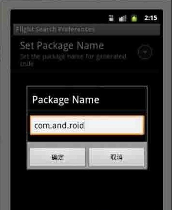
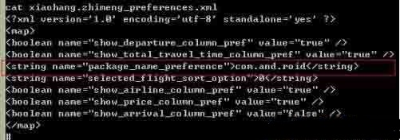

Android EditTextPreference
首选项框架还提供了一种自由格式文本首选项，名为EditTextPreference。此首选项可以用于捕获原始文本，而不是要求用户进行选择。为了演示该首选项，假设一个应用程序为用户生成java代码，是假设此应用程序的一个首选项设置可能是为生成的类使用默认的包名。那么在这里，我们希望向用户显示一个文本字段，支持他为生成的类输入包名，如下图这种效果。
效果图：

下面是我们的xml文件，此文件存放在 /res/xml/packagepref.xml
<?xml version="1.0" encoding="utf-8"?><PreferenceScreen xmlns:android="http://schemas.android.com/apk/res/android
android:key="flight_columns_pref
android:summary="Set Columns for Search Results
android:title="Flight Search Preferences" >
<EditTextPreference
android:dialogTitle="Package Name
android:key="package_name_preference
android:summary="Set the package name for generated code
android:title="Set Package Name" />
</PreferenceScreen>
下面是我们的 PreferenceActivity类 EditTextPreferenceActivity
import android.os.Bundle;import android.preference.PreferenceActivity;
public class EditTextPreferenceActivity extends PreferenceActivity {
@Override
protected void onCreate(Bundle savedInstanceState) {
super.onCreate(savedInstanceState);
addPreferencesFromResource(R.xml.packagepref);
}
}
从xml文件可以看出我们定义了一个 PreferenceScreen，其中包含了一个 EditTextPreference作为子屏幕。当用户选择 Set Package Name时，将弹出一个对话框供输入包名。当用户点击 确定 按钮时，首选项将保存到首选项存储。 见下图
